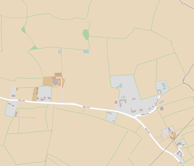

In the West Midlands we’ve been busy with rural mapping. To those of you surprised that there’s any countryside in the sprawling industrial conurbation that spreads from Wolverhampton through Birmingham and Solihull into Coventry, we need only quote the motto of Solihull which is Urbs in Rure (Town in Country). You will see that there is a large amount of green belt land that has been jealously guarded by planning authorities. The green belt land provides much needed recreational access for the surrounding population. It will come under increasing pressure from the new relaxations on planning restrictions.
In a COUNTRYSIDE TRIAL AREA to the eastern end of Solihull and the Western end of Coventry bounded by A45 / Birmingham Road Meriden / Berkswell Road / Meriden Road / Coventry Road / Broad Lane / Eastern Green estates / Allesley Green estates, mappa-mercia mappers have collaborated to produce a rural map to the most detailed level currently available within OSM.
Guidelines
The guidelines which we evolved by discussion, some concentrating on mapping landuse and others on mapping footpaths, are as follows:
1. All field boundaries are shown using the predominant feature defining it to someone in the field. The most useful are:
– barrier=hedge
– barrier=fence
– waterway=stream (NB: if a stream also has hedge one side and fence the other we only show more than one if it is necessary to make situation clearer).
– highway=service (or higher – only show barrier as well if necessary)
– boundary between landuse=residential and landuse=farmland (NB – these are not so easy to see and therefore adding a barrier as well is desirable, or for “MapQuest Open” type rendering, essential.
2. Adding the main buildings within a residential area is desirable in order to give as god idea what the area looks like. We have tried to add all houses, and usually all similar sized or larger buildings to all small areas of landuse=residential. In some cases we have added all buildings and the dividing hedge/fence between plots, but regard this as optional and maybe overkill/over use of memory/rendering-CPU-time/etc. In larger residential areas such as Meriden and Berkswell we have not added any buildings to contrast village with hamlet/mansions/etc., but would welcome other local editors to take on such tasks over time. In larger areas still, it is obvious by adding all the residential roads that the grey area is residential. Buildings for farm use are default labelled as building=agricultural, unless the specific use is known, e.g building=glasshouse
3. We have tried to give a landuse to all light grey areas other than the verges of roads and some tracks and footpaths. Sometimes this needed lateral thinking to define an area by its major use to avoid leaving light grey bits of scrubland, etc.
4. Being surrounded by large residential areas where horse riding is popular amongst the residents there is a large amount of farmland devoted to grazing and exercising horses: these we have differentiated by using landuse=meadow. It is often hard to get this right, for example the meadows north of Pickford Grange Farm are usually full of horses, but checking with Google StreetView shows cattle in the eastern 2 or 3 so we’ve left them meadow). There are other areas which are probably anomalies but regular ground surveying and more discussion will eventually clear these up.
5. Landuse=forest has only been used where it is obvious by the regular pattern of the trees that it is a planted and managed area of trees. All other wooded areas are tagged natural=wood. Currently we are not sure that we have been totally consistent here. There can also be ambiguity between a line of trees, a thin wood and a thick hedge,especially along watercourses. Much here is a matter of styles between individual mappers.
Issues
A. The brown colouring of the farmland we hope one day soon be made lighter/brighter. The current brown is not, to us, aesthetically pleasing, and makes seeing highway=footway paths hard to see. The residential grey has almost as bad an effect.
It may be a good idea to render footways somewhat wider (especially at larger scales), and/or increase the width of lightening the background which works so well with woods and forests.
B. We have been adding a lot more of the stiles and kissing gates. Unfortunately the latter do not get rendered whereas gates, bollards and stiles do. Kissing gates locations are useful to know if you need to navigate with persons who can walk adequately but have mobility difficulty in crossing stiles or you have a very large dog which you can’t lift over stiles bit you can get though kissing gates. We can’t rely on the absence of stiles on the map to infer a walkable route in these circumstances (incomplete surveying), but the explicit rendering of kissing gates would be a great asset.

.png){kind=link}
{kind=link}
{kind=link}
{kind=link}
{kind=link}
{kind=link}
{kind=link}